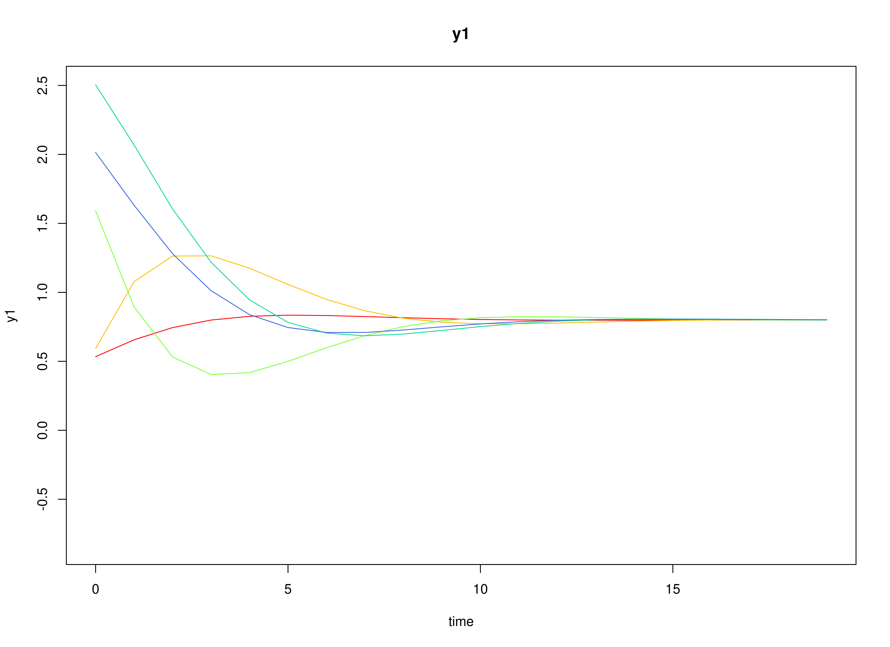
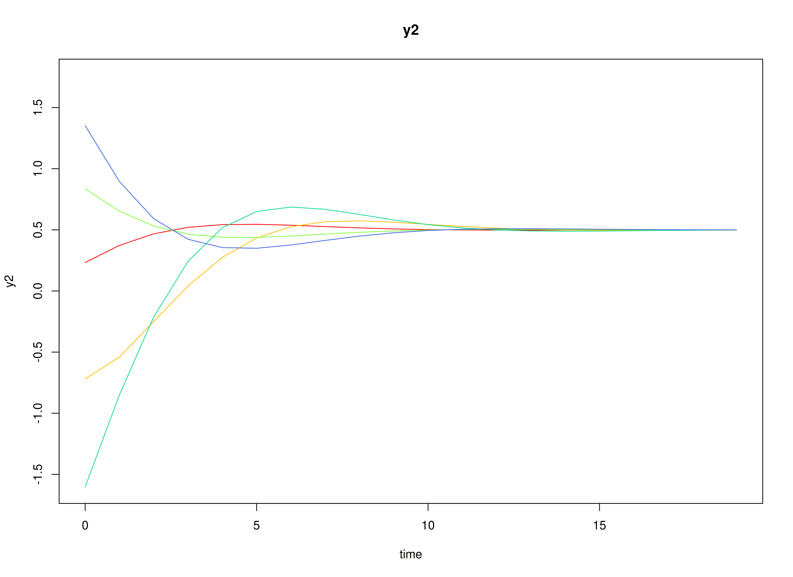

Fit the Discrete-Time Vector Autoregressive Model By ID (Adaptive Recovery | 1000 Measurement Occasions)
Ivan Jacob Agaloos Pesigan
2025-10-15
Source:vignettes/adaptive-recovery-1000.Rmd
adaptive-recovery-1000.RmdDynamics Description
The Adaptive Recovery process reflects an asymmetric regulatory dynamic between two latent constructs—such as stress and coping—where activation in one system initiates a corrective response in the other. Specifically, stress tends to increase coping responses, while coping reduces subsequent stress, producing a negative feedback loop that promotes stability and recovery.
Individuals differ in the strength and balance of these cross-regulatory influences, leading to variability in how quickly they return to equilibrium after disturbances. The process noise covariance is moderate and negatively correlated, representing compensatory fluctuations where increases in stress are often accompanied by decreases in coping, while measurement error variance is small and symmetric across variables.
This configuration captures a psychologically meaningful stress–response mechanism, characterized by self-correcting dynamics that stabilize the system over time through coordinated but asymmetric influences.
Model
The measurement model is given by where , , and are random variables and , , and are model parameters. represents a vector of observed random variables, a vector of latent random variables, and a vector of random measurement errors, at time and individual . denotes a matrix of factor loadings, and the covariance matrix of for individual . In this model, is an identity matrix and is a symmetric matrix.
The dynamic structure is given by where , , and are random variables, and , and are model parameters. Here, is a vector of latent variables at time and individual , represents a vector of latent variables at time and individual , and represents a vector of dynamic noise at time and individual . is a matrix of autoregression and cross regression coefficients for individual , and the covariance matrix of for individual . In this model, is a symmetric matrix.
Data Generation
Notation
Let be the number of time points and be the number of individuals.
Let the measurement model intecept vector be normally distributed with the following means
and covariance matrix
Let the factor loadings matrix be given by
Let the measurement error covariance matrix be given by
Let the initial condition be given by
and are functions of and .
Let the transition matrix be normally distributed with the following means
and covariance matrix
Let the intercept vector be fixed to a zero vector.
The SimNuN and SimBetaN functions from the
simStateSpace package generates random intercept vectors
and transition matrices from the multivariate normal distribution. Note
that the SimBetaN function generates transition matrices
that are weakly stationary with an option to set lower and upper
bounds.
Let the dynamic process noise be given by
R Function Arguments
n
#> [1] 100
time
#> [1] 11000
burnin
#> [1] 10000
# first mu0 in the list of length n
mu0[[1]]
#> [1] 0 0
# first sigma0 in the list of length n
sigma0[[1]]
#> [,1] [,2]
#> [1,] 0.3399277 -0.0557114
#> [2,] -0.0557114 1.1620385
# first sigma0_l in the list of length n
sigma0_l[[1]] # sigma0_l <- t(chol(sigma0))
#> [,1] [,2]
#> [1,] 0.58303323 0.000000
#> [2,] -0.09555442 1.073735
alpha
#> [[1]]
#> [1] 0 0
# first beta in the list of length n
beta[[1]]
#> [,1] [,2]
#> [1,] 0.5159622 0.01359474
#> [2,] 0.3202660 0.89904484
# first psi in the list of length n
psi[[1]]
#> [,1] [,2]
#> [1,] 0.25 -0.10
#> [2,] -0.10 0.22
psi_l[[1]] # psi_l <- t(chol(psi))
#> [,1] [,2]
#> [1,] 0.5 0.0000000
#> [2,] -0.2 0.4242641
# first nu in the list of length n
nu[[1]]
#> [1] 1.094299 0.100988
lambda
#> [[1]]
#> [,1] [,2]
#> [1,] 1 0
#> [2,] 0 1
# first theta in the list of length n
theta[[1]]
#> [,1] [,2]
#> [1,] 0.5 0.0
#> [2,] 0.0 0.5
theta_l[[1]] # theta_l <- t(chol(theta))
#> [,1] [,2]
#> [1,] 0.7071068 0.0000000
#> [2,] 0.0000000 0.7071068Visualizing the Dynamics Without Process Noise and Measurement Error (n = 5 with Different Initial Condition)

Using the SimSSMIVary Function from the
simStateSpace Package to Simulate Data
library(simStateSpace)
sim <- SimSSMIVary(
n = n,
time = time,
mu0 = mu0,
sigma0_l = sigma0_l,
alpha = alpha,
beta = beta,
psi_l = psi_l,
nu = nu,
lambda = lambda,
theta_l = theta_l
)
data <- as.data.frame(sim, burnin = burnin)
head(data)
#> id time y1 y2
#> 1 1 0 1.5903935 -1.0269628
#> 2 1 1 0.9288686 0.4296857
#> 3 1 2 2.0010930 -1.2365114
#> 4 1 3 2.2961315 -1.7734153
#> 5 1 4 1.9932917 -1.0469535
#> 6 1 5 1.4911727 -1.1539057
plot(sim, burnin = burnin)

Model Fitting
The FitDTVARMxID function fits a DT-VAR model on each
individual
.
To set up the estimation, we first provide starting
values for each parameter matrix.
Autoregressive Parameters (beta)
The autoregressive coefficient matrix is given starting values.
beta_values <- betaLDL′-parameterized covariance matrices
Covariances such as psi and theta are
estimated using the LDL′ decomposition of a positive definite covariance
matrix. The decomposition expresses a covariance matrix
as
where:
-
is a strictly lower-triangular matrix of free parameters
(
l_mat_strict), - is the identity matrix,
- is an unconstrained vector,
- ensures strictly positive diagonal entries.
The LDL() function extracts this decomposition from a
positive definite covariance matrix. It returns:
-
d_uc: unconstrained diagonal parameters, equal toInvSoftplus(d_vec), -
d_vec: diagonal entries, equal toSoftplus(d_uc), -
l_mat_strict: the strictly lower-triangular factor.
sigma <- matrix(
data = c(1.0, 0.5, 0.5, 1.0),
nrow = 2,
ncol = 2
)
ldl_sigma <- LDL(sigma)
d_uc <- ldl_sigma$d_uc
l_mat_strict <- ldl_sigma$l_mat_strict
I <- diag(2)
sigma_reconstructed <- (l_mat_strict + I) %*% diag(log1p(exp(d_uc)), 2) %*% t(l_mat_strict + I)
sigma_reconstructed
#> [,1] [,2]
#> [1,] 1.0 0.5
#> [2,] 0.5 1.0Process Noise Covariance Matrix (psi)
Starting values for the process noise covariance matrix are given below, with corresponding LDL′ parameters.
psi_values <- psi[[1]]
ldl_psi_values <- LDL(psi_values)
psi_d_values <- ldl_psi_values$d_uc
psi_l_values <- ldl_psi_values$l_mat_strict
psi_d_values
#> [1] -1.258692 -1.623449
psi_l_values
#> [,1] [,2]
#> [1,] 0.0 0
#> [2,] -0.4 0Measurement Error Covariance Matrix (theta)
Starting values for the measurement error covariance matrix are given below, with corresponding LDL′ parameters.
theta_values <- theta[[1]]
ldl_theta_values <- LDL(theta_values)
theta_d_values <- ldl_theta_values$d_uc
theta_l_values <- ldl_theta_values$l_mat_strict
theta_d_values
#> [1] -0.4327521 -0.4327521
theta_l_values
#> [,1] [,2]
#> [1,] 0 0
#> [2,] 0 0Initial mean vector (mu_0) and covariance matrix
(sigma_0)
The initial mean vector
and covariance matrix
are fixed using mu0 and sigma0.
mu0_values <- mu0
FitDTVARMxID
fit <- FitDTVARMxID(
data = data,
observed = c("y1", "y2"),
id = "id",
beta_values = beta_values,
psi_d_values = psi_d_values,
psi_l_values = psi_l_values,
nu_values = nu_values,
theta_d_values = theta_d_values,
mu0_values = mu0_values,
sigma0_d_values = sigma0_d_values,
sigma0_l_values = sigma0_l_values,
ncores = parallel::detectCores()
)Parameter estimates
summary(fit, converged = FALSE)
#> beta_1_1 beta_2_1 beta_1_2 beta_2_2
#> FitDTVARMxID_DTVAR_ID1.Rds 0.48352374 0.272415480 -0.009238862 0.9035078
#> FitDTVARMxID_DTVAR_ID2.Rds 0.55174839 0.150958973 -0.229939446 0.9383310
#> FitDTVARMxID_DTVAR_ID3.Rds 0.60989783 0.450779440 -0.327440941 0.7590458
#> FitDTVARMxID_DTVAR_ID4.Rds 0.58285939 0.333583311 -0.451318041 0.9850516
#> FitDTVARMxID_DTVAR_ID5.Rds 0.64666295 0.110494959 -0.202909621 0.6531715
#> FitDTVARMxID_DTVAR_ID6.Rds 0.58005562 0.417169357 -0.165714372 0.8152188
#> FitDTVARMxID_DTVAR_ID7.Rds 0.57945509 0.421557814 -0.131649748 0.7646712
#> FitDTVARMxID_DTVAR_ID8.Rds 0.13649740 0.012723354 -0.355802882 0.8014495
#> FitDTVARMxID_DTVAR_ID9.Rds 0.73932913 0.376542448 -0.213707825 0.7689008
#> FitDTVARMxID_DTVAR_ID10.Rds 0.08925869 -0.018838127 -0.569816171 0.8471615
#> FitDTVARMxID_DTVAR_ID11.Rds 0.63478720 0.195332910 -0.431474971 0.6570168
#> FitDTVARMxID_DTVAR_ID12.Rds 0.81185053 0.463399217 -0.184067626 0.6549342
#> FitDTVARMxID_DTVAR_ID13.Rds 0.63518967 0.312343160 -0.181457624 0.7702180
#> FitDTVARMxID_DTVAR_ID14.Rds 0.13295977 0.156332119 -0.685800848 0.8156021
#> FitDTVARMxID_DTVAR_ID15.Rds 0.64048641 0.303139861 -0.109587577 0.5090465
#> FitDTVARMxID_DTVAR_ID16.Rds 0.37360804 0.344097697 -0.102551039 0.8716248
#> FitDTVARMxID_DTVAR_ID17.Rds 0.61287491 0.307359289 -0.375845636 0.7264547
#> FitDTVARMxID_DTVAR_ID18.Rds 0.64958829 0.319162511 -0.548197041 0.5907477
#> FitDTVARMxID_DTVAR_ID19.Rds 0.88175277 0.429927929 -0.209037872 0.5240690
#> FitDTVARMxID_DTVAR_ID20.Rds 0.52208950 0.119616963 -0.111437523 0.9095264
#> FitDTVARMxID_DTVAR_ID21.Rds 0.63174054 0.272087483 -0.201506426 0.8116655
#> FitDTVARMxID_DTVAR_ID22.Rds 0.75385173 0.458723835 -0.640629874 0.3893162
#> FitDTVARMxID_DTVAR_ID23.Rds 0.84814395 0.590444905 -0.060979633 0.7144448
#> FitDTVARMxID_DTVAR_ID24.Rds 0.43206680 0.279896559 -0.249798887 0.7337592
#> FitDTVARMxID_DTVAR_ID25.Rds 0.64825258 0.321975136 -0.163417512 0.8565340
#> FitDTVARMxID_DTVAR_ID26.Rds 0.79670606 0.425856662 -0.310362475 0.9053742
#> FitDTVARMxID_DTVAR_ID27.Rds 0.65186749 0.380073406 -0.268808869 0.5879735
#> FitDTVARMxID_DTVAR_ID28.Rds 0.82979722 0.170730902 -0.053506751 0.6979054
#> FitDTVARMxID_DTVAR_ID29.Rds 0.72957925 0.425364675 -0.319105741 0.6394492
#> FitDTVARMxID_DTVAR_ID30.Rds 0.73096879 0.389975613 -0.221360085 0.5932873
#> FitDTVARMxID_DTVAR_ID31.Rds 0.69113572 0.088168259 -0.358498454 0.3499528
#> FitDTVARMxID_DTVAR_ID32.Rds 0.60130351 0.270217557 -0.095730513 0.8384520
#> FitDTVARMxID_DTVAR_ID33.Rds 0.71894733 -0.369462962 -0.006931252 0.3271960
#> FitDTVARMxID_DTVAR_ID34.Rds 0.82956290 0.331223023 -0.211263369 0.7850847
#> FitDTVARMxID_DTVAR_ID35.Rds 0.61806804 0.076136408 -0.124584516 0.9130439
#> FitDTVARMxID_DTVAR_ID36.Rds 0.49343076 0.235048196 -0.360522919 0.8805119
#> FitDTVARMxID_DTVAR_ID37.Rds 0.60546744 0.135739862 -0.234259021 0.9062263
#> FitDTVARMxID_DTVAR_ID38.Rds 0.71486241 0.273883790 -0.143911052 0.7491172
#> FitDTVARMxID_DTVAR_ID39.Rds 0.40133510 0.236472689 -0.371112174 0.8854348
#> FitDTVARMxID_DTVAR_ID40.Rds 0.55435533 0.205807009 -0.308524184 0.9151375
#> FitDTVARMxID_DTVAR_ID41.Rds 0.78211797 0.099727062 -0.238165709 0.8569226
#> FitDTVARMxID_DTVAR_ID42.Rds 0.65287399 0.051783630 -0.112861306 0.6270127
#> FitDTVARMxID_DTVAR_ID43.Rds 0.63335251 0.321365876 -0.233955731 0.3333041
#> FitDTVARMxID_DTVAR_ID44.Rds 0.53220394 0.185942913 -0.123158677 0.3801213
#> FitDTVARMxID_DTVAR_ID45.Rds 0.51439483 0.324876968 0.081923209 0.7529102
#> FitDTVARMxID_DTVAR_ID46.Rds 0.49741234 0.196042106 -0.405820613 0.8728124
#> FitDTVARMxID_DTVAR_ID47.Rds 0.47357882 0.131884594 -0.686422470 0.7529864
#> FitDTVARMxID_DTVAR_ID48.Rds 0.59706145 0.156526877 -0.299784336 0.6966968
#> FitDTVARMxID_DTVAR_ID49.Rds 0.63206965 0.184617087 -0.276977853 0.8078243
#> FitDTVARMxID_DTVAR_ID50.Rds 0.45017752 0.244286846 -0.533316321 0.5528733
#> FitDTVARMxID_DTVAR_ID51.Rds 0.70947011 0.255088757 -0.477502740 0.4479448
#> FitDTVARMxID_DTVAR_ID52.Rds 0.43212907 0.122671756 -0.405280428 0.8718168
#> FitDTVARMxID_DTVAR_ID53.Rds 0.53791902 0.064763151 -0.293607857 0.6400321
#> FitDTVARMxID_DTVAR_ID54.Rds 0.59982407 0.301397240 -0.245356197 0.8932098
#> FitDTVARMxID_DTVAR_ID55.Rds 0.38224874 0.167235022 -0.344249450 0.6700466
#> FitDTVARMxID_DTVAR_ID56.Rds 0.92773275 0.450462029 -0.497269090 0.1810147
#> FitDTVARMxID_DTVAR_ID57.Rds 0.34325207 0.195444656 -0.417984954 0.5693198
#> FitDTVARMxID_DTVAR_ID58.Rds 0.20561681 0.096528854 -0.563573293 0.6632322
#> FitDTVARMxID_DTVAR_ID59.Rds 0.28356638 0.266174529 -0.688543511 0.5875891
#> FitDTVARMxID_DTVAR_ID60.Rds 0.56811134 0.298599458 -0.222116231 0.9216952
#> FitDTVARMxID_DTVAR_ID61.Rds 0.50445246 0.289016291 -0.181480207 0.8829478
#> FitDTVARMxID_DTVAR_ID62.Rds 0.57166424 0.119295982 0.045393843 0.7324118
#> FitDTVARMxID_DTVAR_ID63.Rds 0.67390711 -0.093314824 -0.157423840 0.3982786
#> FitDTVARMxID_DTVAR_ID64.Rds 0.62954195 0.142474405 -0.149432483 0.7935049
#> FitDTVARMxID_DTVAR_ID65.Rds 0.69303264 0.227393927 -0.472965132 0.8178301
#> FitDTVARMxID_DTVAR_ID66.Rds 0.89638566 0.352803191 -0.303172814 0.7629810
#> FitDTVARMxID_DTVAR_ID67.Rds 0.87131714 0.505002369 -0.300981981 0.8272050
#> FitDTVARMxID_DTVAR_ID68.Rds 0.32865274 -0.006295787 -0.636447530 0.5770644
#> FitDTVARMxID_DTVAR_ID69.Rds 0.68544720 0.195966729 -0.334149800 0.7107560
#> FitDTVARMxID_DTVAR_ID70.Rds 1.01849251 0.268395205 -0.481088550 0.4428482
#> FitDTVARMxID_DTVAR_ID71.Rds 0.68772102 0.433821169 -0.150946312 0.7764619
#> FitDTVARMxID_DTVAR_ID72.Rds 0.78241152 0.128693125 0.010735031 0.7846420
#> FitDTVARMxID_DTVAR_ID73.Rds 0.57795507 0.195548122 -0.500418749 0.8005953
#> FitDTVARMxID_DTVAR_ID74.Rds 0.92434261 0.240878512 -0.471758080 0.6144434
#> FitDTVARMxID_DTVAR_ID75.Rds 0.41984879 0.217050848 -0.550112686 0.8059067
#> FitDTVARMxID_DTVAR_ID76.Rds 0.55091436 0.291540571 -0.386936262 0.7773934
#> FitDTVARMxID_DTVAR_ID77.Rds 0.55975365 0.170700456 -0.475548089 0.7876278
#> FitDTVARMxID_DTVAR_ID78.Rds 0.68480775 0.164668777 -0.554877446 0.4562458
#> FitDTVARMxID_DTVAR_ID79.Rds 0.59984573 0.204964545 -0.324336692 0.4594360
#> FitDTVARMxID_DTVAR_ID80.Rds 0.55916142 0.246934822 -0.184187536 0.7964858
#> FitDTVARMxID_DTVAR_ID81.Rds 0.55808774 0.389523715 -0.473867322 0.5904102
#> FitDTVARMxID_DTVAR_ID82.Rds 0.45710510 0.255159608 -0.289240255 0.6034734
#> FitDTVARMxID_DTVAR_ID83.Rds 0.29060477 0.019569239 -0.611741118 0.7597626
#> FitDTVARMxID_DTVAR_ID84.Rds 0.54627610 0.077693127 -0.310570507 0.4012425
#> FitDTVARMxID_DTVAR_ID85.Rds 0.42959667 0.293256325 -0.436102089 1.0826312
#> FitDTVARMxID_DTVAR_ID86.Rds 0.18823912 -0.124823489 -0.399732796 0.8620014
#> FitDTVARMxID_DTVAR_ID87.Rds 0.63399407 0.386990017 -0.405221859 0.5848434
#> FitDTVARMxID_DTVAR_ID88.Rds 0.77415246 0.294211691 -0.285376499 0.7164348
#> FitDTVARMxID_DTVAR_ID89.Rds 0.72609011 0.280971191 -0.142949389 0.6463944
#> FitDTVARMxID_DTVAR_ID90.Rds 0.58400891 0.080348091 -0.135471033 0.6924626
#> FitDTVARMxID_DTVAR_ID91.Rds 0.54854264 0.236871717 -0.315045149 0.9660886
#> FitDTVARMxID_DTVAR_ID92.Rds 0.56859537 0.144056559 -0.269787167 0.7187542
#> FitDTVARMxID_DTVAR_ID93.Rds 0.52403969 0.319285697 -0.581215951 0.5513247
#> FitDTVARMxID_DTVAR_ID94.Rds 0.59892342 0.061381600 -0.491920030 0.7502694
#> FitDTVARMxID_DTVAR_ID95.Rds 0.56556678 0.411921581 -0.087450337 1.0100467
#> FitDTVARMxID_DTVAR_ID96.Rds 0.50351122 0.119496914 -0.335215968 0.8245377
#> FitDTVARMxID_DTVAR_ID97.Rds 0.75048787 0.411079255 -0.209616241 0.5396108
#> FitDTVARMxID_DTVAR_ID98.Rds 0.53405380 0.238489702 -0.174892055 0.5866691
#> FitDTVARMxID_DTVAR_ID99.Rds 0.51958735 0.091414868 -0.297636116 0.9486802
#> FitDTVARMxID_DTVAR_ID100.Rds 0.71830655 0.176854972 -0.489862627 0.4045935
#> nu_1_1 nu_2_1 psi_l_2_1 psi_d_1_1
#> FitDTVARMxID_DTVAR_ID1.Rds 1.05960959 -0.27728483 -0.26916818 -1.3105750
#> FitDTVARMxID_DTVAR_ID2.Rds 1.47743352 0.28968692 -0.20397816 -1.0632453
#> FitDTVARMxID_DTVAR_ID3.Rds 0.72287578 0.21051207 -0.38005591 -1.5804207
#> FitDTVARMxID_DTVAR_ID4.Rds 0.25705150 -0.09414715 -0.39502575 -1.1636794
#> FitDTVARMxID_DTVAR_ID5.Rds 1.41280460 0.18772293 -0.66354114 -2.0842682
#> FitDTVARMxID_DTVAR_ID6.Rds 1.32939969 0.48603280 -0.46719803 -1.2145444
#> FitDTVARMxID_DTVAR_ID7.Rds 0.42081058 0.32445656 -0.61826763 -1.7421173
#> FitDTVARMxID_DTVAR_ID8.Rds 0.71836912 0.53342503 -0.13892521 0.1934528
#> FitDTVARMxID_DTVAR_ID9.Rds 0.36321994 0.27259040 -0.42790812 -1.1546061
#> FitDTVARMxID_DTVAR_ID10.Rds 0.70993147 0.93679046 -0.05754303 0.1154984
#> FitDTVARMxID_DTVAR_ID11.Rds 1.00724780 0.78917966 -0.44011765 -0.9756356
#> FitDTVARMxID_DTVAR_ID12.Rds 0.82428420 0.37296455 -0.46188813 -1.0436731
#> FitDTVARMxID_DTVAR_ID13.Rds 0.06857479 0.54955121 -0.47633897 -2.0126756
#> FitDTVARMxID_DTVAR_ID14.Rds 1.14799058 0.44970087 -0.33151581 -0.5650947
#> FitDTVARMxID_DTVAR_ID15.Rds 0.43389840 0.12391388 -0.46375564 -1.2238517
#> FitDTVARMxID_DTVAR_ID16.Rds 0.15581907 0.23211070 -0.42640775 -1.5182944
#> FitDTVARMxID_DTVAR_ID17.Rds 0.81104523 0.82754441 -0.58472310 -1.6342774
#> FitDTVARMxID_DTVAR_ID18.Rds 1.14782518 1.15270445 -0.39714856 -1.5130587
#> FitDTVARMxID_DTVAR_ID19.Rds 0.13431302 0.21740636 -0.49739477 -1.4829067
#> FitDTVARMxID_DTVAR_ID20.Rds 1.14412723 1.05024478 -0.55503430 -1.4565325
#> FitDTVARMxID_DTVAR_ID21.Rds 0.60420367 0.36374794 -0.60488141 -1.5003147
#> FitDTVARMxID_DTVAR_ID22.Rds 0.63244992 0.44040268 -0.65097973 -2.0763357
#> FitDTVARMxID_DTVAR_ID23.Rds 0.76788716 0.51135173 -0.53868782 -1.4609380
#> FitDTVARMxID_DTVAR_ID24.Rds 0.95557953 0.62290988 -0.38819187 -1.3375823
#> FitDTVARMxID_DTVAR_ID25.Rds 0.72326259 0.63263676 -0.36202834 -1.2080757
#> FitDTVARMxID_DTVAR_ID26.Rds 0.51070682 0.56607375 -0.55581504 -1.1466064
#> FitDTVARMxID_DTVAR_ID27.Rds 0.54497294 0.42937254 -0.43898092 -1.0714888
#> FitDTVARMxID_DTVAR_ID28.Rds 0.63231008 0.66113246 -0.64863745 -1.8500498
#> FitDTVARMxID_DTVAR_ID29.Rds 0.65118377 0.68587786 -0.48359706 -1.2291594
#> FitDTVARMxID_DTVAR_ID30.Rds 0.93297332 0.20927070 -0.49951836 -1.2735791
#> FitDTVARMxID_DTVAR_ID31.Rds 1.30578252 0.73006671 -0.60193175 -1.7504684
#> FitDTVARMxID_DTVAR_ID32.Rds 0.82843925 0.73104085 -0.52827494 -1.4602081
#> FitDTVARMxID_DTVAR_ID33.Rds 0.56967317 0.81849505 -1.68592027 -2.8155622
#> FitDTVARMxID_DTVAR_ID34.Rds 1.25003934 0.63752069 -0.30674542 -1.4114290
#> FitDTVARMxID_DTVAR_ID35.Rds 1.41282703 0.67713576 -0.55541621 -1.4748356
#> FitDTVARMxID_DTVAR_ID36.Rds 1.19539159 0.91041666 -0.48142788 -1.4424720
#> FitDTVARMxID_DTVAR_ID37.Rds 0.78357254 0.89845841 -0.27655766 -1.4939204
#> FitDTVARMxID_DTVAR_ID38.Rds 0.41565553 0.11076604 -0.28675473 -0.8578003
#> FitDTVARMxID_DTVAR_ID39.Rds -0.20820036 -0.12000934 -0.20897808 -1.4679744
#> FitDTVARMxID_DTVAR_ID40.Rds 0.67106708 0.17502185 -0.31891131 -1.1982329
#> FitDTVARMxID_DTVAR_ID41.Rds 0.34209471 0.34786663 -0.58621042 -1.4233541
#> FitDTVARMxID_DTVAR_ID42.Rds 0.95378285 0.28268550 -0.69979818 -1.3908209
#> FitDTVARMxID_DTVAR_ID43.Rds 0.63182791 0.28244567 -0.84068412 -1.6648893
#> FitDTVARMxID_DTVAR_ID44.Rds 0.26499737 0.25995174 -0.48334827 -1.3029998
#> FitDTVARMxID_DTVAR_ID45.Rds 0.98591700 0.90864712 -0.44562547 -1.4324652
#> FitDTVARMxID_DTVAR_ID46.Rds 1.08958444 0.52889489 -0.28531492 -0.9418987
#> FitDTVARMxID_DTVAR_ID47.Rds 0.98800667 0.03589228 -0.31787806 -1.4100706
#> FitDTVARMxID_DTVAR_ID48.Rds 1.20977759 1.19388247 -0.20774038 -0.8054060
#> FitDTVARMxID_DTVAR_ID49.Rds 0.35237443 1.00187750 -0.57019772 -1.8195355
#> FitDTVARMxID_DTVAR_ID50.Rds 0.94830099 0.72721020 -0.25357426 -1.2743314
#> FitDTVARMxID_DTVAR_ID51.Rds 0.24588092 -0.19462963 -0.39750592 -1.2615268
#> FitDTVARMxID_DTVAR_ID52.Rds 0.64606905 0.20057289 -0.35491344 -1.0119165
#> FitDTVARMxID_DTVAR_ID53.Rds 0.44609944 0.50044401 -0.35460040 -1.4309611
#> FitDTVARMxID_DTVAR_ID54.Rds 0.95909453 0.55918807 -0.36283332 -1.3472700
#> FitDTVARMxID_DTVAR_ID55.Rds 0.43520169 0.48980382 -1.44708815 -2.5759528
#> FitDTVARMxID_DTVAR_ID56.Rds 0.34796106 0.28148779 -0.97802368 -1.8867491
#> FitDTVARMxID_DTVAR_ID57.Rds 1.08726028 0.61724598 -0.29018738 -0.4824078
#> FitDTVARMxID_DTVAR_ID58.Rds 0.83070637 0.19938925 -0.30859072 -1.1534129
#> FitDTVARMxID_DTVAR_ID59.Rds 0.82506408 0.16362011 -0.21860623 -1.2377455
#> FitDTVARMxID_DTVAR_ID60.Rds 0.68720192 0.38449362 -0.60403084 -1.6021536
#> FitDTVARMxID_DTVAR_ID61.Rds 0.93890953 0.03186183 -0.34615891 -1.0110272
#> FitDTVARMxID_DTVAR_ID62.Rds 0.88121645 0.61972316 -0.43695733 -1.3885837
#> FitDTVARMxID_DTVAR_ID63.Rds 0.58223012 1.13560817 -0.32356097 -1.1217169
#> FitDTVARMxID_DTVAR_ID64.Rds 1.07009014 0.47399494 -0.38069987 -1.2453156
#> FitDTVARMxID_DTVAR_ID65.Rds 1.14455482 0.57361267 -0.44959684 -1.0627155
#> FitDTVARMxID_DTVAR_ID66.Rds 0.46091313 0.73230380 -0.42662173 -1.3291097
#> FitDTVARMxID_DTVAR_ID67.Rds 0.54315445 0.08852888 -0.50560114 -1.4051990
#> FitDTVARMxID_DTVAR_ID68.Rds 0.70262300 0.35730733 -0.21959560 -0.6673542
#> FitDTVARMxID_DTVAR_ID69.Rds 0.56426825 0.55628533 -0.36596508 -1.3665135
#> FitDTVARMxID_DTVAR_ID70.Rds 1.43064667 0.80731144 -0.32926309 -1.3049660
#> FitDTVARMxID_DTVAR_ID71.Rds 1.35524305 0.83808629 -0.50435334 -1.4633684
#> FitDTVARMxID_DTVAR_ID72.Rds 1.32902912 0.72909357 -0.45292073 -1.5155384
#> FitDTVARMxID_DTVAR_ID73.Rds 1.06569816 0.19996750 -0.45381978 -1.4532131
#> FitDTVARMxID_DTVAR_ID74.Rds 0.79527245 0.28532656 -0.79344378 -1.9590637
#> FitDTVARMxID_DTVAR_ID75.Rds 0.38732083 0.52641840 -0.40811041 -1.7525943
#> FitDTVARMxID_DTVAR_ID76.Rds 1.26321273 0.35436282 -0.64894793 -1.5201628
#> FitDTVARMxID_DTVAR_ID77.Rds 0.85873129 0.80077265 -0.30213179 -0.9895501
#> FitDTVARMxID_DTVAR_ID78.Rds 0.52388035 1.13498195 -0.75496885 -2.2069593
#> FitDTVARMxID_DTVAR_ID79.Rds 0.78042324 0.34195729 -0.53985337 -1.3479350
#> FitDTVARMxID_DTVAR_ID80.Rds 0.21735453 0.21650844 -0.63783165 -1.7190603
#> FitDTVARMxID_DTVAR_ID81.Rds -0.15905635 0.56892357 -0.40360117 -1.3719259
#> FitDTVARMxID_DTVAR_ID82.Rds 0.72048896 0.51578993 -0.26484343 -0.9059380
#> FitDTVARMxID_DTVAR_ID83.Rds 1.18844834 1.18698380 -0.15393206 -0.5096268
#> FitDTVARMxID_DTVAR_ID84.Rds 0.46999943 0.43376809 -0.38129871 -0.8376912
#> FitDTVARMxID_DTVAR_ID85.Rds 0.20784427 0.92006507 -0.41715224 -1.6202945
#> FitDTVARMxID_DTVAR_ID86.Rds 0.63044884 -0.24279185 -0.16489792 -0.2050119
#> FitDTVARMxID_DTVAR_ID87.Rds 0.94754396 0.28095726 -0.73020573 -1.8100055
#> FitDTVARMxID_DTVAR_ID88.Rds 1.08006624 0.47794183 -0.45278440 -1.5648096
#> FitDTVARMxID_DTVAR_ID89.Rds 0.87612990 0.80501472 -0.48120291 -1.6600998
#> FitDTVARMxID_DTVAR_ID90.Rds 1.41277764 0.96061168 -0.47453944 -1.3469415
#> FitDTVARMxID_DTVAR_ID91.Rds 1.01524073 0.99458579 -0.33405184 -1.5201760
#> FitDTVARMxID_DTVAR_ID92.Rds 1.00174409 0.83410449 -0.24847687 -1.0346242
#> FitDTVARMxID_DTVAR_ID93.Rds 0.82190957 -0.02318270 -0.35301950 -1.5563888
#> FitDTVARMxID_DTVAR_ID94.Rds 1.08704691 0.49135990 -0.34808221 -1.2233736
#> FitDTVARMxID_DTVAR_ID95.Rds 0.75099779 0.56178210 -0.90205865 -2.3240127
#> FitDTVARMxID_DTVAR_ID96.Rds -0.06607791 0.03846961 -0.40441743 -1.0645609
#> FitDTVARMxID_DTVAR_ID97.Rds 1.08057629 0.92611288 -0.51856418 -0.9949301
#> FitDTVARMxID_DTVAR_ID98.Rds 1.01164613 0.68237097 -0.44501590 -1.0760119
#> FitDTVARMxID_DTVAR_ID99.Rds 0.40481144 0.21486325 -0.24853141 -0.7599959
#> FitDTVARMxID_DTVAR_ID100.Rds 0.82049115 0.40535369 -0.53505676 -1.4733639
#> psi_d_2_1 theta_d_1_1 theta_d_2_1
#> FitDTVARMxID_DTVAR_ID1.Rds -1.7412457 -0.50471821 -0.3644062
#> FitDTVARMxID_DTVAR_ID2.Rds -1.6072675 -0.52083865 -0.4359474
#> FitDTVARMxID_DTVAR_ID3.Rds -2.2027903 -0.32659983 -0.1549196
#> FitDTVARMxID_DTVAR_ID4.Rds -1.4361989 -0.48335621 -0.4624733
#> FitDTVARMxID_DTVAR_ID5.Rds -1.1775719 -0.11060968 -0.8149793
#> FitDTVARMxID_DTVAR_ID6.Rds -1.3312061 -0.50565380 -0.5374649
#> FitDTVARMxID_DTVAR_ID7.Rds -1.5024628 -0.36867744 -0.4833097
#> FitDTVARMxID_DTVAR_ID8.Rds -1.4572645 -6.48739424 -0.4956232
#> FitDTVARMxID_DTVAR_ID9.Rds -1.9709975 -0.43422860 -0.4389375
#> FitDTVARMxID_DTVAR_ID10.Rds -1.4299716 -15.22941307 -0.3593132
#> FitDTVARMxID_DTVAR_ID11.Rds -1.7628529 -0.53779672 -0.4504177
#> FitDTVARMxID_DTVAR_ID12.Rds -1.7131597 -0.36492562 -0.3931640
#> FitDTVARMxID_DTVAR_ID13.Rds -2.3383116 -0.12243662 -0.1689314
#> FitDTVARMxID_DTVAR_ID14.Rds -1.8170472 -1.06109801 -0.4664105
#> FitDTVARMxID_DTVAR_ID15.Rds -1.3569864 -0.36216041 -0.6849711
#> FitDTVARMxID_DTVAR_ID16.Rds -1.9002461 -0.35286515 -0.3146269
#> FitDTVARMxID_DTVAR_ID17.Rds -2.3414934 -0.37529079 -0.3895923
#> FitDTVARMxID_DTVAR_ID18.Rds -1.3955817 -0.28725726 -0.5114539
#> FitDTVARMxID_DTVAR_ID19.Rds -1.6614198 -0.21621354 -0.3182589
#> FitDTVARMxID_DTVAR_ID20.Rds -1.8190627 -0.32940352 -0.4820985
#> FitDTVARMxID_DTVAR_ID21.Rds -1.3123688 -0.30977782 -0.6005855
#> FitDTVARMxID_DTVAR_ID22.Rds -1.7802876 -0.28313027 -0.3686490
#> FitDTVARMxID_DTVAR_ID23.Rds -1.8347587 -0.45357383 -0.4024695
#> FitDTVARMxID_DTVAR_ID24.Rds -1.3963525 -0.51805104 -0.5064010
#> FitDTVARMxID_DTVAR_ID25.Rds -1.8187486 -0.50526325 -0.3666204
#> FitDTVARMxID_DTVAR_ID26.Rds -1.8996831 -0.38722577 -0.4188267
#> FitDTVARMxID_DTVAR_ID27.Rds -1.4357388 -0.56090065 -0.4316710
#> FitDTVARMxID_DTVAR_ID28.Rds -1.7150730 -0.22281617 -0.4038548
#> FitDTVARMxID_DTVAR_ID29.Rds -1.4877429 -0.43755686 -0.5413712
#> FitDTVARMxID_DTVAR_ID30.Rds -1.8936528 -0.45073264 -0.2834600
#> FitDTVARMxID_DTVAR_ID31.Rds -1.6939977 -0.36126731 -0.3811087
#> FitDTVARMxID_DTVAR_ID32.Rds -2.3659575 -0.39699203 -0.2142992
#> FitDTVARMxID_DTVAR_ID33.Rds -1.6499294 0.05221206 -0.7502779
#> FitDTVARMxID_DTVAR_ID34.Rds -1.2955190 -0.52599882 -0.4328539
#> FitDTVARMxID_DTVAR_ID35.Rds -1.8117870 -0.35760677 -0.5014898
#> FitDTVARMxID_DTVAR_ID36.Rds -2.2166259 -0.36013592 -0.3436670
#> FitDTVARMxID_DTVAR_ID37.Rds -1.7593023 -0.43578658 -0.4172010
#> FitDTVARMxID_DTVAR_ID38.Rds -1.4566105 -0.66262813 -0.4410167
#> FitDTVARMxID_DTVAR_ID39.Rds -2.2773171 -0.30692487 -0.2378264
#> FitDTVARMxID_DTVAR_ID40.Rds -2.0906370 -0.60113360 -0.2436121
#> FitDTVARMxID_DTVAR_ID41.Rds -1.7514438 -0.43435787 -0.5128259
#> FitDTVARMxID_DTVAR_ID42.Rds -1.3177653 -0.35286638 -0.9058576
#> FitDTVARMxID_DTVAR_ID43.Rds -0.7116071 -0.32121713 -1.3277882
#> FitDTVARMxID_DTVAR_ID44.Rds -0.7453974 -0.28069569 -0.9939472
#> FitDTVARMxID_DTVAR_ID45.Rds -1.6095813 -0.38540988 -0.5181971
#> FitDTVARMxID_DTVAR_ID46.Rds -2.2948656 -0.55663473 -0.3582209
#> FitDTVARMxID_DTVAR_ID47.Rds -2.2710154 -0.37212586 -0.3415090
#> FitDTVARMxID_DTVAR_ID48.Rds -1.2184376 -0.55031606 -0.5327053
#> FitDTVARMxID_DTVAR_ID49.Rds -2.1388472 -0.31451269 -0.3130503
#> FitDTVARMxID_DTVAR_ID50.Rds -1.7261618 -0.51853675 -0.4545244
#> FitDTVARMxID_DTVAR_ID51.Rds -1.3342686 -0.45586022 -0.7107480
#> FitDTVARMxID_DTVAR_ID52.Rds -2.3159178 -0.68284229 -0.3548288
#> FitDTVARMxID_DTVAR_ID53.Rds -1.5335520 -0.44511457 -0.4211178
#> FitDTVARMxID_DTVAR_ID54.Rds -1.7935438 -0.34668358 -0.4545889
#> FitDTVARMxID_DTVAR_ID55.Rds -2.9271825 -0.14288105 -0.4934007
#> FitDTVARMxID_DTVAR_ID56.Rds -2.2838439 -0.19813891 -0.5147208
#> FitDTVARMxID_DTVAR_ID57.Rds -1.6837135 -1.09565364 -0.3959125
#> FitDTVARMxID_DTVAR_ID58.Rds -1.8259923 -0.47386636 -0.1773449
#> FitDTVARMxID_DTVAR_ID59.Rds -2.1203659 -0.57399458 -0.3511919
#> FitDTVARMxID_DTVAR_ID60.Rds -2.2136522 -0.28692871 -0.3109475
#> FitDTVARMxID_DTVAR_ID61.Rds -1.8372010 -0.54926973 -0.4260003
#> FitDTVARMxID_DTVAR_ID62.Rds -1.2854479 -0.37357560 -0.4823583
#> FitDTVARMxID_DTVAR_ID63.Rds -0.5973503 -0.38748245 -0.9772076
#> FitDTVARMxID_DTVAR_ID64.Rds -2.1013259 -0.43916164 -0.1830809
#> FitDTVARMxID_DTVAR_ID65.Rds -1.4980209 -0.44000254 -0.6350935
#> FitDTVARMxID_DTVAR_ID66.Rds -1.8575709 -0.39934709 -0.3847714
#> FitDTVARMxID_DTVAR_ID67.Rds -1.8682442 -0.46925908 -0.4331428
#> FitDTVARMxID_DTVAR_ID68.Rds -1.3602693 -0.99733768 -0.3622247
#> FitDTVARMxID_DTVAR_ID69.Rds -2.0570788 -0.32244689 -0.3691077
#> FitDTVARMxID_DTVAR_ID70.Rds -1.8900156 -0.45349030 -0.2577522
#> FitDTVARMxID_DTVAR_ID71.Rds -1.8362718 -0.29337272 -0.4644109
#> FitDTVARMxID_DTVAR_ID72.Rds -1.4419572 -0.39932415 -0.5598531
#> FitDTVARMxID_DTVAR_ID73.Rds -2.1293906 -0.34793931 -0.3135550
#> FitDTVARMxID_DTVAR_ID74.Rds -2.3785035 -0.31432206 -0.2389755
#> FitDTVARMxID_DTVAR_ID75.Rds -1.9304795 -0.27215972 -0.4686545
#> FitDTVARMxID_DTVAR_ID76.Rds -1.8899084 -0.26795940 -0.5463052
#> FitDTVARMxID_DTVAR_ID77.Rds -2.2170511 -0.45788612 -0.3950731
#> FitDTVARMxID_DTVAR_ID78.Rds -2.7705257 -0.14098814 -0.2659137
#> FitDTVARMxID_DTVAR_ID79.Rds -1.9446685 -0.46955577 -0.4365893
#> FitDTVARMxID_DTVAR_ID80.Rds -1.5830516 -0.24688743 -0.5851348
#> FitDTVARMxID_DTVAR_ID81.Rds -1.6786254 -0.34653879 -0.5203739
#> FitDTVARMxID_DTVAR_ID82.Rds -1.6325297 -0.58609081 -0.4271392
#> FitDTVARMxID_DTVAR_ID83.Rds -1.6123752 -1.08079764 -0.3900591
#> FitDTVARMxID_DTVAR_ID84.Rds -0.7814418 -0.67785720 -0.8817694
#> FitDTVARMxID_DTVAR_ID85.Rds -2.5895607 -0.30476237 -0.2721351
#> FitDTVARMxID_DTVAR_ID86.Rds -1.3115768 -1.52475957 -0.3600995
#> FitDTVARMxID_DTVAR_ID87.Rds -1.7468270 -0.25008187 -0.3890227
#> FitDTVARMxID_DTVAR_ID88.Rds -1.8909104 -0.31534356 -0.2917208
#> FitDTVARMxID_DTVAR_ID89.Rds -1.1385761 -0.37247848 -0.5950417
#> FitDTVARMxID_DTVAR_ID90.Rds -1.5985931 -0.40226976 -0.3337481
#> FitDTVARMxID_DTVAR_ID91.Rds -1.9546688 -0.46260761 -0.2973204
#> FitDTVARMxID_DTVAR_ID92.Rds -1.5409552 -0.48332982 -0.4246174
#> FitDTVARMxID_DTVAR_ID93.Rds -1.8998792 -0.32152328 -0.3764948
#> FitDTVARMxID_DTVAR_ID94.Rds -2.0354887 -0.41309431 -0.2535753
#> FitDTVARMxID_DTVAR_ID95.Rds -2.1501262 -0.10130902 -0.4390042
#> FitDTVARMxID_DTVAR_ID96.Rds -2.1911867 -0.65282660 -0.1345674
#> FitDTVARMxID_DTVAR_ID97.Rds -1.4855774 -0.45225826 -0.6250956
#> FitDTVARMxID_DTVAR_ID98.Rds -1.7591987 -0.60776224 -0.5522205
#> FitDTVARMxID_DTVAR_ID99.Rds -1.7898669 -0.77050646 -0.3588732
#> FitDTVARMxID_DTVAR_ID100.Rds -1.9327007 -0.40446007 -0.5090266Proportion of converged cases
converged(
fit,
theta_tol = 0.01,
prop = TRUE
)
#> [1] 0.98Meta-analyze the measurement error covariance matrix for the converged cases
library(metaVAR)
fixed_theta <- MetaVARMx(
fit,
random = FALSE,
effects = FALSE,
cov_meas = TRUE,
theta_tol = 0.01
)
coef(fixed_theta)
#> alpha_1_1 alpha_2_1
#> -0.3663083 -0.3978809
summary(fixed_theta)
#> est se z p 2.5% 97.5%
#> alpha[1,1] -0.3663 0.0130 -28.0776 0 -0.3919 -0.3407
#> alpha[2,1] -0.3979 0.0128 -30.9762 0 -0.4231 -0.3727
theta_d_values <- coef(fixed_theta)Refit the model with fixed measurement error covariance matrix
fit <- FitDTVARMxID(
data = data,
observed = c("y1", "y2"),
id = "id",
beta_values = beta_values,
psi_d_values = psi_d_values,
psi_l_values = psi_l_values,
nu_values = nu_values,
theta_fixed = TRUE,
theta_d_values = theta_d_values,
mu0_values = mu0_values,
sigma0_d_values = sigma0_d_values,
sigma0_l_values = sigma0_l_values,
ncores = parallel::detectCores()
)Parameter estimates
random <- MetaVARMx(
fit,
effects = TRUE,
int_meas = TRUE
)
summary(random)
#> est se z p 2.5% 97.5%
#> alpha[1,1] 0.6157 0.0147 41.8422 0.0000 0.5869 0.6445
#> alpha[2,1] 0.2354 0.0134 17.5625 0.0000 0.2092 0.2617
#> alpha[3,1] -0.2857 0.0155 -18.4073 0.0000 -0.3161 -0.2552
#> alpha[4,1] 0.7273 0.0156 46.4855 0.0000 0.6966 0.7579
#> alpha[5,1] 0.7688 0.0373 20.6351 0.0000 0.6958 0.8418
#> alpha[6,1] 0.5023 0.0325 15.4526 0.0000 0.4386 0.5660
#> tau_sqr[1,1] 0.0184 0.0031 5.9803 0.0000 0.0124 0.0245
#> tau_sqr[2,1] 0.0089 0.0021 4.1530 0.0000 0.0047 0.0131
#> tau_sqr[3,1] 0.0020 0.0023 0.8529 0.3937 -0.0025 0.0064
#> tau_sqr[4,1] -0.0049 0.0023 -2.1554 0.0311 -0.0094 -0.0004
#> tau_sqr[5,1] 0.0030 0.0055 0.5490 0.5830 -0.0077 0.0137
#> tau_sqr[6,1] 0.0017 0.0048 0.3484 0.7275 -0.0077 0.0110
#> tau_sqr[2,2] 0.0152 0.0025 5.9630 0.0000 0.0102 0.0202
#> tau_sqr[3,2] 0.0009 0.0020 0.4352 0.6634 -0.0031 0.0048
#> tau_sqr[4,2] -0.0028 0.0020 -1.3753 0.1690 -0.0068 0.0012
#> tau_sqr[5,2] -0.0038 0.0050 -0.7629 0.4455 -0.0136 0.0060
#> tau_sqr[6,2] -0.0070 0.0044 -1.5795 0.1142 -0.0156 0.0017
#> tau_sqr[3,3] 0.0197 0.0033 5.9667 0.0000 0.0132 0.0262
#> tau_sqr[4,3] 0.0089 0.0025 3.5456 0.0004 0.0040 0.0138
#> tau_sqr[5,3] 0.0040 0.0057 0.7091 0.4783 -0.0071 0.0152
#> tau_sqr[6,3] 0.0033 0.0050 0.6666 0.5050 -0.0065 0.0132
#> tau_sqr[4,4] 0.0206 0.0034 6.1147 0.0000 0.0140 0.0273
#> tau_sqr[5,4] 0.0040 0.0058 0.6905 0.4899 -0.0074 0.0154
#> tau_sqr[6,4] 0.0004 0.0051 0.0717 0.9428 -0.0095 0.0103
#> tau_sqr[5,5] 0.1360 0.0196 6.9262 0.0000 0.0975 0.1745
#> tau_sqr[6,5] 0.0439 0.0128 3.4181 0.0006 0.0187 0.0691
#> tau_sqr[6,6] 0.1025 0.0150 6.8211 0.0000 0.0731 0.1320
#> i_sqr[1,1] 0.9135 0.0132 69.1748 0.0000 0.8877 0.9394
#> i_sqr[2,1] 0.9052 0.0144 62.9272 0.0000 0.8770 0.9334
#> i_sqr[3,1] 0.9135 0.0132 69.0056 0.0000 0.8876 0.9395
#> i_sqr[4,1] 0.9141 0.0128 71.1965 0.0000 0.8889 0.9393
#> i_sqr[5,1] 0.9839 0.0023 429.2032 0.0000 0.9794 0.9884
#> i_sqr[6,1] 0.9847 0.0022 445.9757 0.0000 0.9804 0.9890Extract estimated parameters.
coefs <- coef(random)
covs <- matrix(
data = fitDTVARMxID:::.SymofVech(
x = coefs[7:27],
k = 6
),
nrow = 6,
ncol = 6
)
beta_means <- matrix(
data = coefs[1:4],
nrow = 2,
ncol = 2
)
beta_cov <- covs[1:4, 1:4]
nu_means <- coefs[5:6]
nu_cov <- covs[5:6, 5:6]Estimated values for the transition matrix.
beta_means
#> [,1] [,2]
#> [1,] 0.6156992 -0.2856587
#> [2,] 0.2354367 0.7272848
beta_cov
#> [,1] [,2] [,3] [,4]
#> [1,] 0.4828331 0.10598874 -0.2684455 0.1630009
#> [2,] 0.1059887 -0.03639976 -0.4819719 -0.7133818
#> [3,] -0.2684455 -0.48197189 0.1598315 0.1922545
#> [4,] 0.1630009 -0.71338180 0.1922545 -3.9851563Estimated values for the observed means.
nu_means
#> [1] 0.7687700 0.5022908
nu_cov
#> [,1] [,2]
#> [1,] -4.209917 -1.960097
#> [2,] -1.960097 -2.429155Population values for the transition matrix based on 5 million replications.
beta_pop_mean
#> [1] 0.5975226 0.2495715 -0.3054649 0.6893696
beta_pop_cov
#> [,1] [,2] [,3] [,4]
#> [1,] 2.386517e-02 0.0092591880 8.078956e-05 -0.0002817067
#> [2,] 9.259188e-03 0.0193540268 1.323752e-04 0.0001410741
#> [3,] 8.078956e-05 0.0001323752 1.883487e-02 0.0084724601
#> [4,] -2.817067e-04 0.0001410741 8.472460e-03 0.0222254212Population values for the observed means.
nu_mu
#> [1] 0.8 0.5
nu_sigma
#> [,1] [,2]
#> [1,] 0.15 0.05
#> [2,] 0.05 0.10Proportion of converged cases
converged(
fit,
prop = TRUE
)
#> [1] 1